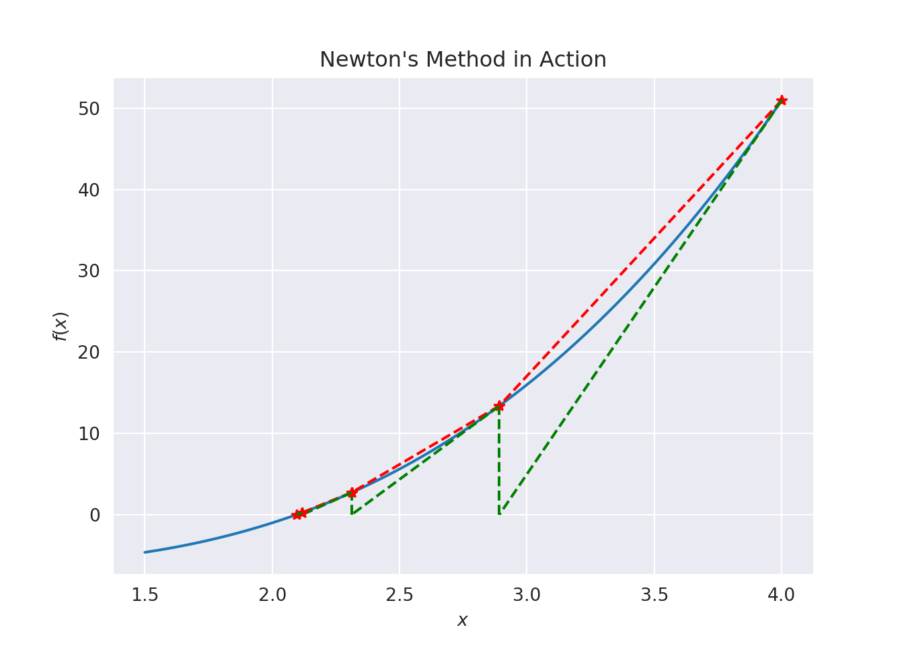
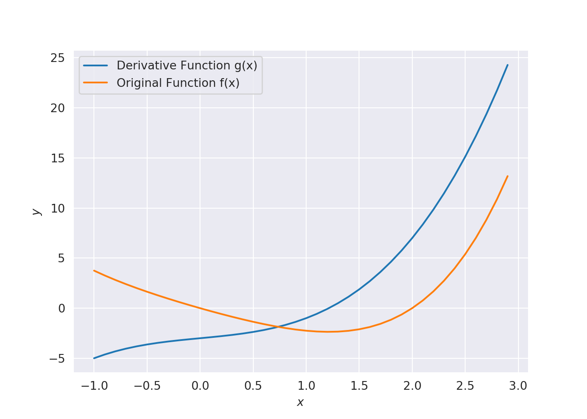

Chapter 3 Numerical Solutions to Nonlinear Equations
It is often necessary to find the stationary point(s) of a given function \(f(x)\). This would mean finding the root of a nonlinear function \(g(x)\) if we consider \(g(x)=f'(x)=0\). In other words, solving \(g(x)=0\). Here, we introduce the Newton method. This method is important because when we cannot solve \(f'(x)=0\) analytically we will be able to solve numerically.
3.1 Newton’s Method
Newton’s method is one of the more powerful and well known numerical methods for finding a root of \(g(x)\) i.e. for solving for \(x\) such that \(g(x)=0.\) So we can use it to find the turning point i.e., when \(f'(x)=0\). In the context of optimization we want an \(x^*\) such that \(f'(x^*)=0\). Consider the figure below:

Suppose at some stage we have obtained the point \(x_n\) as an approximation to the root at \(x^*\) (initially this is a guess). Newton observed that if \(g(x)\) was a straight line through \((x_n, g(x_n))\) with slope \(=g'(x_n) = g'(x)=\) constant for all \(x\) then the equation of the straight line could be found and the root read off. Obviously there would be no problem if \(g(x)\) was actually a straight line; however the tangent might still be a good approximation (as seen in the Figure above). If we regard the tangent as a model of the function \(g(x)\) and we have an approximation \(x_n\) then we can produce a better approximation \(x_{n+1}.\) The method can be applied again and again, to give a sequence of values, each approximating \(x^*\) with more and more certainty.
The general equation of the tangent to the curve of \(g(x)\) at \((x_n,g(x_n))\) has slope \[\begin{equation} g'(x_n) = {(y-g(x_n))\over (x-x_n)}. \ \ \ {\rm When}\ \ \ y=0, \ \ \ {\rm let} \end{equation}\] \(x=x_{n+1}\) (the point where the tangent cuts the \(x\)-axis).
Thus the Newton formula for root finding is : \[\begin{equation} x_{n+1} = x_n - {g(x_n) \over g'(x_n)} \ \ \ \ \ \ g'(x_n) \neq 0 \tag{3.1} \end{equation}\] Hence the Newton method can be described be the following two steps:
\(x_n\) converges to a turning point for suitable choice of \(x_0\).
3.1.0.1 Example
Find the minimum of \(f(x) = \dfrac{x^4}{4} + \dfrac{x^2}{2} - 3x\) near \(x = 2\).

We can see that the find the root of the deritive yields the minimum value of \(f(x)\) in this case (approximately 1.21341). Check: perform a few iterations of Equation (3.1) to check the solution.
3.1.1 Advantages and Disadvantages of Newton’s Method
Advantages
- The method is really fast when it works (quadratic convergence)
Disadvantages:
- Unknown number of steps needed for required accuracy, unlike Bisection for example.
- \(f\) must be at least twice differentiable
- Run into problems when \(g^\prime(x^*) = 0\).
- Potentially could be difficult to compute \(g(x)\) and \(g^\prime(x)\) even if they do exist.
In general Newton’s Method is fast, reliable and trouble-free, but one has to be mindful of the potential problems.
3.2 Secant Method
Here we try to avoid the problems of computing \(f''(x)\) and approximate it by \(\frac{f'(x_n)-f'(x_{n-1})}{x_n-x_{n-1}}\). This given the updating formula: \[\begin{equation} x_{n+1}=x_n-f'(x_n)\dfrac{(x_n-x_{n-1})}{\left (f'(x_n)-f'(x_{n-1}) \right)}. \tag{3.2} \end{equation}\] The other disadvantages of Newton’s method still apply.
## (20, 32)## (-200, 400)
3.2.1 Exercises
- Beginning with \(x =0\), apply Newton’s Method to find the solution of \[ 3x - \sin(x) - \exp(x) = 0, \] up to four iterations. Here \(x\) is in radians.
- Find the critical point(s) of the function \[ f(x) = \dfrac{1}{4}x^4 + \dfrac{1}{2}x^2 - 2x + 1, \] using both Newton’s Method and the Secant Method. If the critical point is a minimiser then obtain the minimum value. You may assume \(x = 2\) as an initial guess.